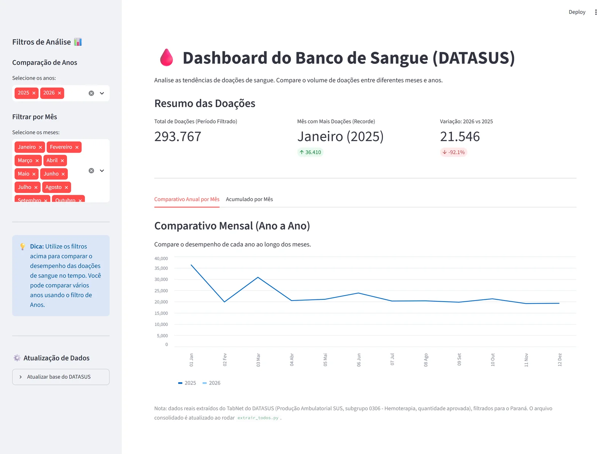
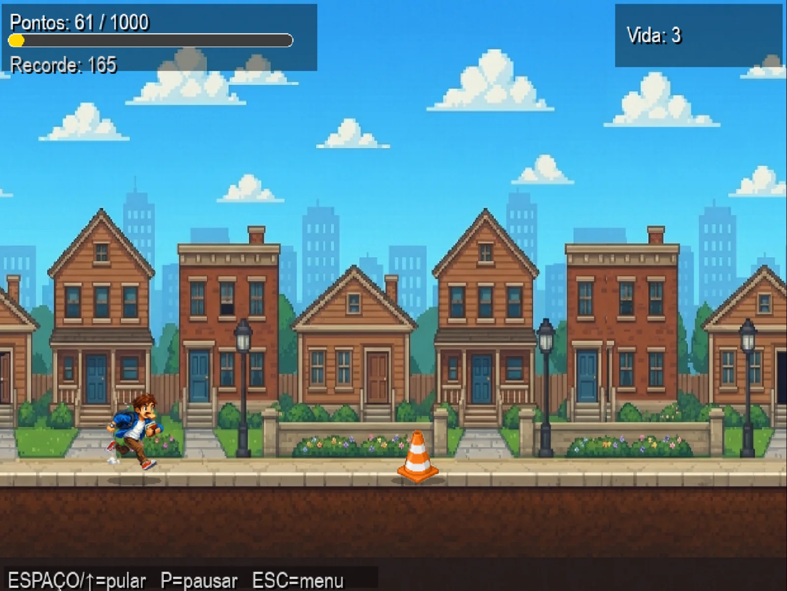
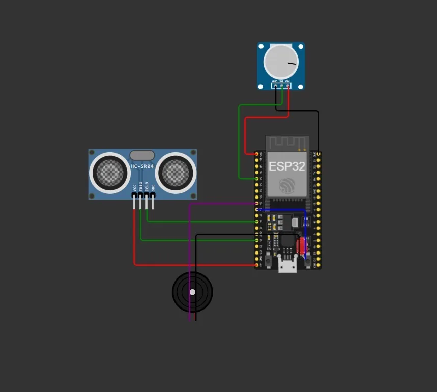
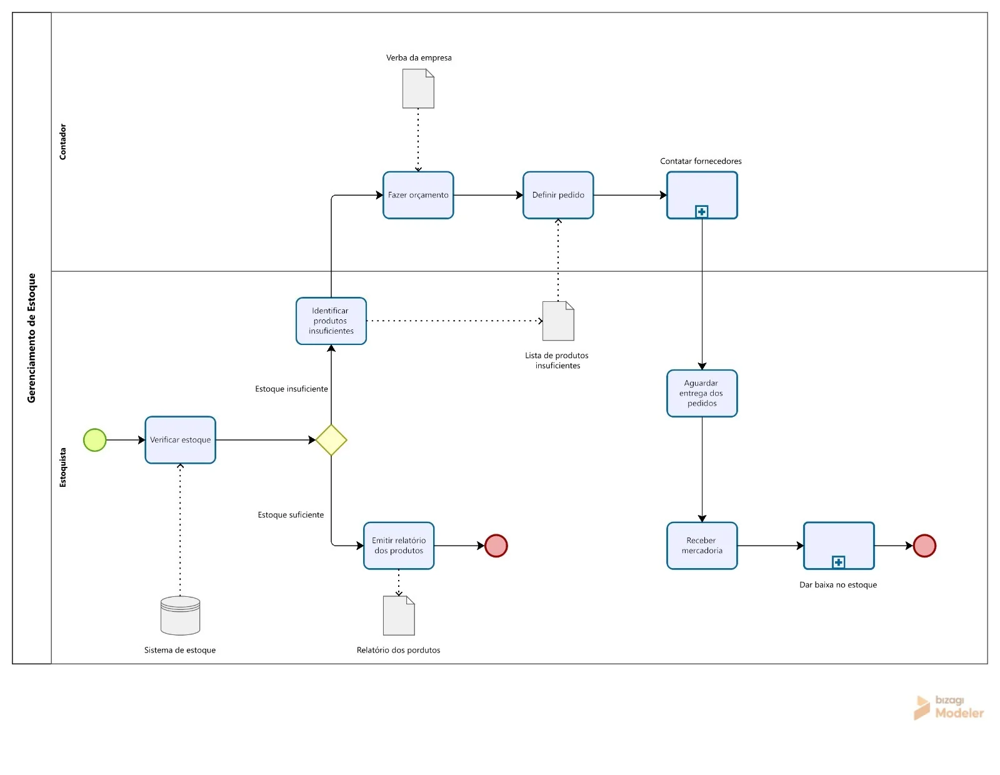
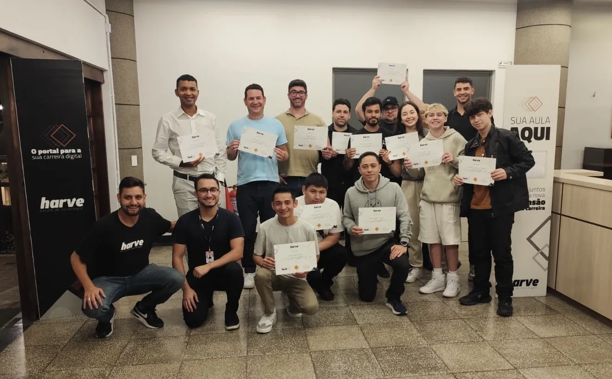
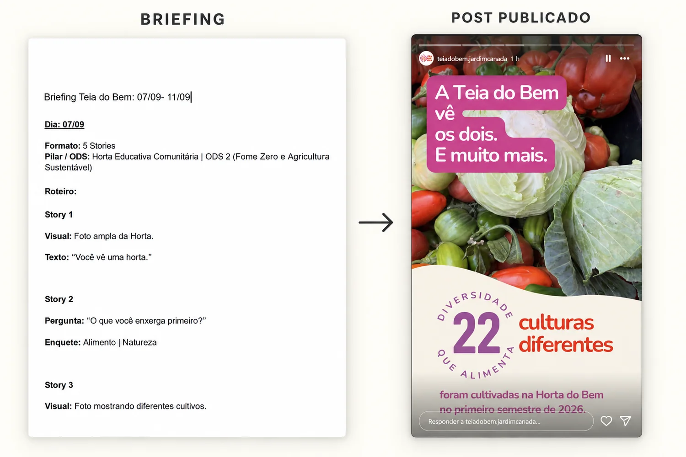
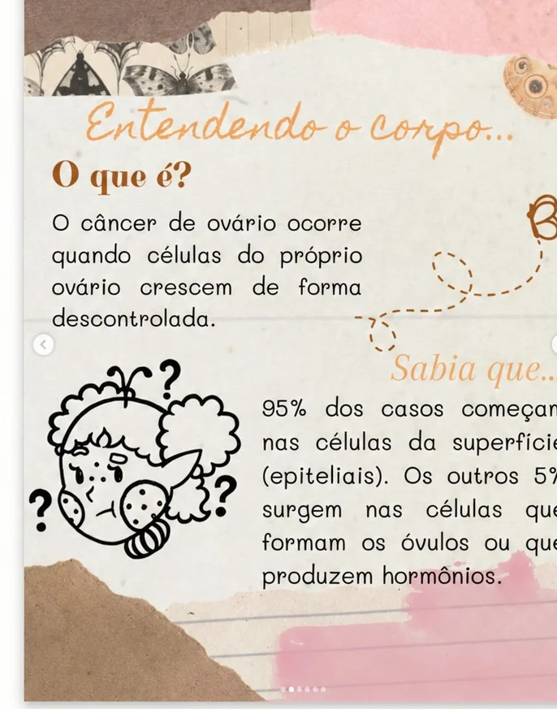

2026–2029
Software Engineering
B.Sc. in progress at PUCPR, Curitiba.

Team project · Harve · Apr 2026
SUS hemotherapy data automation & analysis pipeline
Automating the collection and cleaning of Paraná hemotherapy records from SUS, with an interactive dashboard on top.
PythonSeleniumpandasRPAStreamlit

Individual project · Academic
2D runner in Python and Pygame
A student who’s late for class dodges obstacles across the city — the challenge is to manage three lives and reach the goal before the run ends.
PythonPygamestate machine

Academic team project · Jun 2026
Delivery-management web system
One application to organise clients, products, employees and deliveries in the same system.
DjangoDRFauthenticationCRUD

Academic team project · Jun 2026
IoT prototype for level monitoring and alerts
A proposal for remote monitoring — to track levels and flag situations in urban drainage that need attention.
ESP32ultrasonic sensorBlynkalerts

Team project · Jun 2026
Business process modeling in BPMN
From the conversation with management to the diagrams: a visual map of a veterinary clinic’s processes.
BPMNBizagiprocess analysis
Academic team project · PUCPR · in progress
Self-regulation & psychological-support platform
A platform to support the emotional self-regulation of adolescents at school — mood tracking, guided activities and a channel to ask for help.
requirements analysisuser rolesteam project
Academic project · ESP32 · in progress
Embedded ESP32 system for pet-shop / kennel automation
An ESP32 acting as an HTTP server for a pet station — it tracks water temperature, doses food by weight and switches the water fountain, from a web page and a small REST API.
ESP32embedded CHTTPsensors
An organised view of the tools and languages I work with.
Python pandas Selenium BeautifulSoup Streamlit SQL PostgreSQL
HTML CSS JavaScript TypeScript Django DRF
Affinity Procreate Photoshop Blender Canva
Git GitHub VS Code Bizagi SSMS PowerShell
ScrumKanbanproject management
Portuguese — nativeEnglish — fluentFrench — basic
2026–2029
B.Sc. in progress at PUCPR, Curitiba.
2026
Course at Escola Harve, Curitiba — Jan–Apr 2026.
2024
Science-fair research project at Colégio Bom Jesus.
01 Coffee & Code
A university tech club I started and run with a team of friends from college.
It exists to give students a lower-barrier, hands-on place to learn, build projects together and share what they know — outside the pressure of a graded room.
I lead it where design and technology meet: the visual identity, the materials, how sessions are run, and how people are brought in.
— About
she builds things — with code, design & people
The path
I came to software from making things I could see. Illustration, graphic design and photography first; then freelance work on visual identities, logos and editorial pieces. Baking and small visual studies still sit alongside the rest.
In 2024 I co-authored a school science-fair project on the science of dreams (FICEM) — I proposed the topic and put together the presentation and the video. In early 2026 I took a Python course at Escola Harve: my first structured programming, and what led into the degree.
Later in 2026 I started Software Engineering at PUCPR. Since then the path has widened: a software-development internship on production systems, team projects across data automation, the web, a game, process modelling and IoT, and founding Coffee & Code — a student tech club I run with friends from the course.
What I want to keep building is work where code, design and people meet: software that’s genuinely useful, made with care, in teams that hold room for both the technical and the human side.

Now
Working on the development and maintenance of production software across frontend, backend, APIs and databases — implementing features, investigating bugs and integrating layers of existing systems.
Due to the proprietary nature of the systems I work on, source code and internal materials are not publicly available.
Study — Software Engineering @ PUCPR
More projects — Health Data Automation · Netflix Data Pipeline · Curitibars · All repositories →
02 Playground
Everything I make away from a code editor — digital art, ink drawing, graphic design, photography, things I bake, and volunteering and events. Tap any piece to see it larger.
03 Community & social impact
Building with people — each of these is a different role, in a different place.

Events Coordinator at the students’ union women’s board. I plan and run events and their communication, and initiatives around inclusion and social impact.

Social media volunteer. I write the content briefings — the story-by-story script, the pillar and the goal — that the team turns into the published posts.

Design and media for a women’s-health awareness project. I design the awareness pieces — layout, type and collage — from the content the team provides.
I also join environmental actions, activities with children and other volunteering with Interact and around Curitiba.
Photos are chosen with care — no children’s faces in sensitive contexts, no legible badges or personal data.
04 Contact
Open to build things with good people.